Vegetable Garden
텃밭은 아내가 뒷마당에 꾸미고 싶었던 것 중 가장 원하던 것이었습니다. 외국에 살다보니 한국에서 흔하게 쓰이던 식재료 중 구하기 귀찮은 것이 몇개 있는데, 그 중에 가장 대표적인게 '깻잎', '무', 그리고 '고추' 인 것 같네요.
깻잎은 한국마트에서만 판매가 되는데 너무 빨리 시들해져서 한국마트를 자주 가지 않는 저희에게는 필요할 때 없는 존재였거든요. 무도 비슷합니다. 오래 보관도 안되는데 한국마트 외에는 구하기가 어렵구요. 그나마 고추는 좀 나아요. 청량고추 대신 멕시코산 고추를 쓰면 되니까요.
그래서 렌트 하우스에 살때도 넓디 넓은 마당에 조그맣게 밭을 일궈서 토마토도 심고 깨도 심고 했었죠. (상추는 덤)
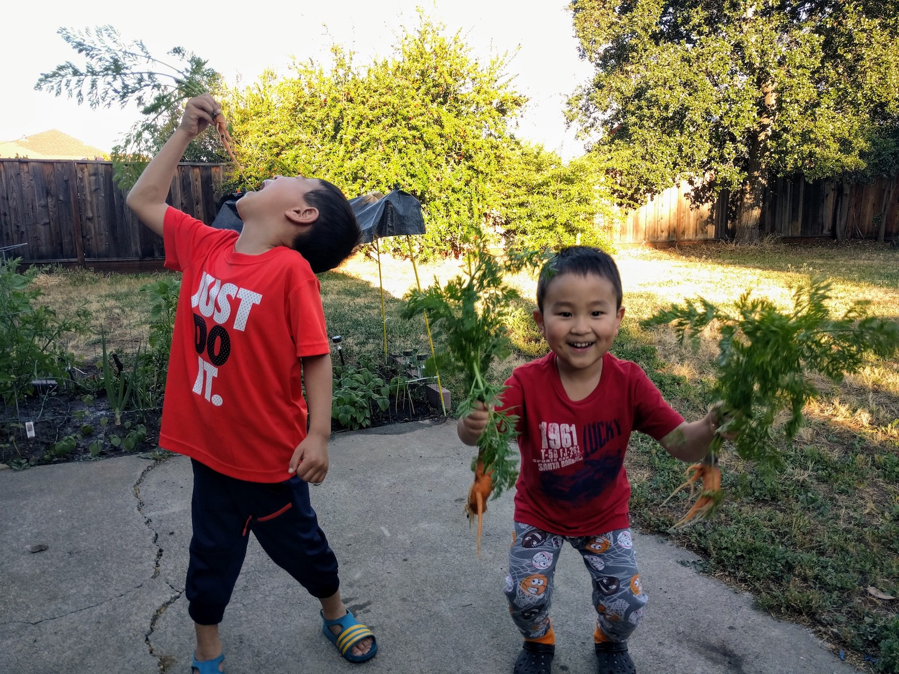
새 집으로 이사를 한 후 마당 한켠에 텃밭을 다시 만들기로 합니다. 이번엔 땅을 바로 일궈서 하는게 아니라 raised vegetable bed를 만들어서 할 생각입니다.
땅을 일구면 문제점이, 위 사진에서 보이는 것 처럼, 깊게 갈아내지 않으면 당근이나 무가 반듯하게 자라지 않더군요. 그래서 자랄 수 있을만큼 깊게 파야 하는데 바닥에 자갈이 워낙에 많으니 정말 힘든 일이 될 것 같았습니다. 그리고, 가꿀 때 쭈그리고 앉아서 하는 것 보다 높이 있으면 아무래도 좀 더 편하죠.
크기는 7.5 피트 X 3.5 피트에 높이는 20인치로 정하고 목재를 삽니다.
썪지 않아야 하기 때문에 화학 처리된 목재 (pressure-treated lumber)를 사는걸 추천하더군요.
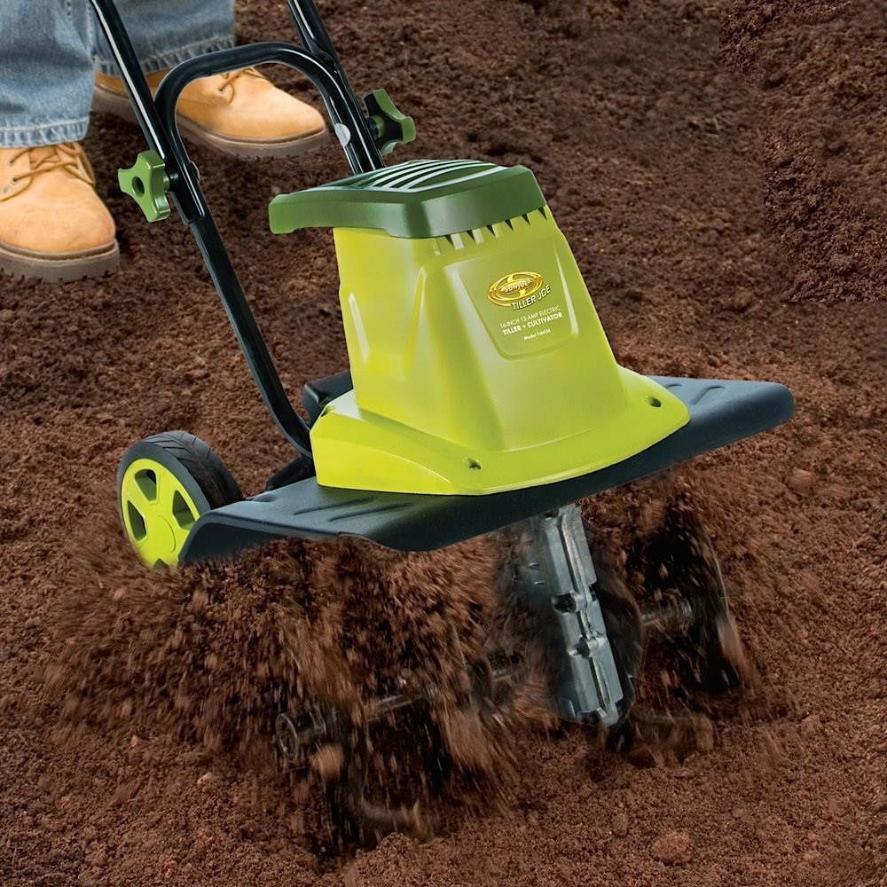
시작하기 전, 수평을 잡아야 하기 때문에, 땅을 갈아서 부드럽게 해 줘야 합니다. 이전에 장만해 둔 Garden Tiller로 땅을 갈아줍니다. 아이비 뿌리도 걸리고, 자갈도 걸리고, 땅이 그다지 좋은 상태는 아니네요. 높이 가든 베드를 만들기로 한 게 잘 한 결정 같습니다.
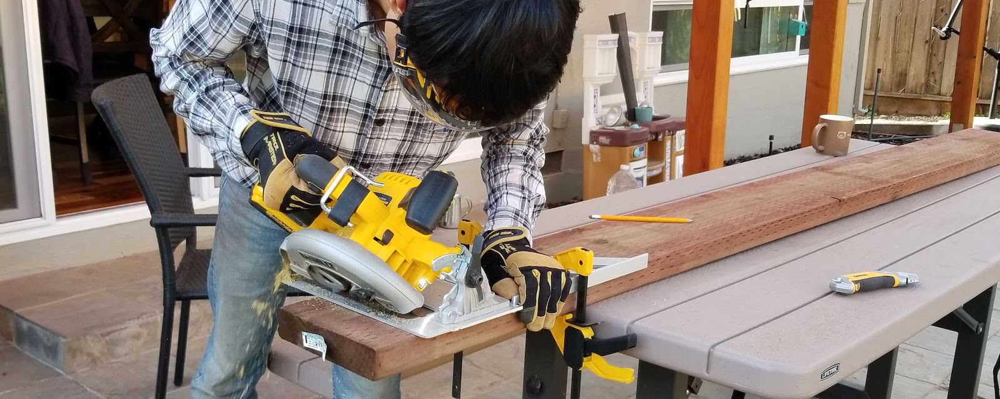
사온 목재를 톱으로 자르기 시작합니다. 먼저 jointer로 목재를 반듯하게 맞추면 좋겠지만, planer, jointer는 정말 비싸서 그림의 떡이므로, 대충 자릅니다. Circular Saw로 45도를 자르려니 여간 힘든게 아니네요. 이런 건 Miter Saw가 훨씬 나은 것 같네요.
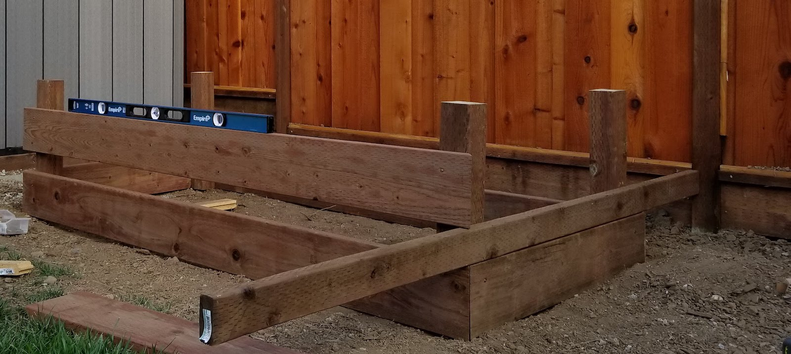
자른 목재를 이용해 기본 레벨을 맞춥니다. 캐비닛 설치한다고 장만해둔 4피트 수평계가 유용하게 쓰이네요.
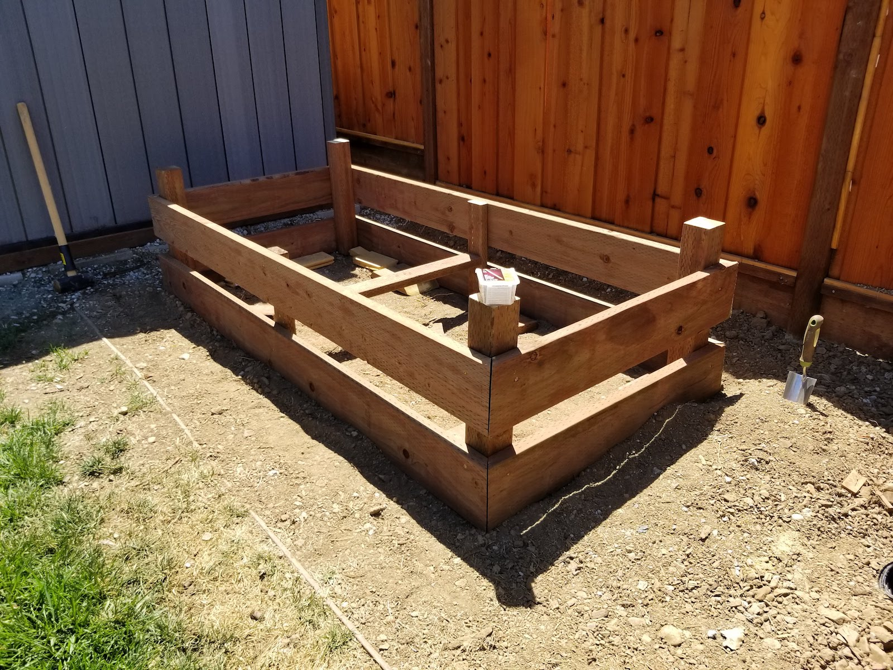
2단을 쌓고 보니 기둥을 길이를 잘못 쟀네요. ;; Reciprocating Saw가 있으면 금방 잘라내겠는데, 없어서 손으로 톱질을 해야 하는군요.
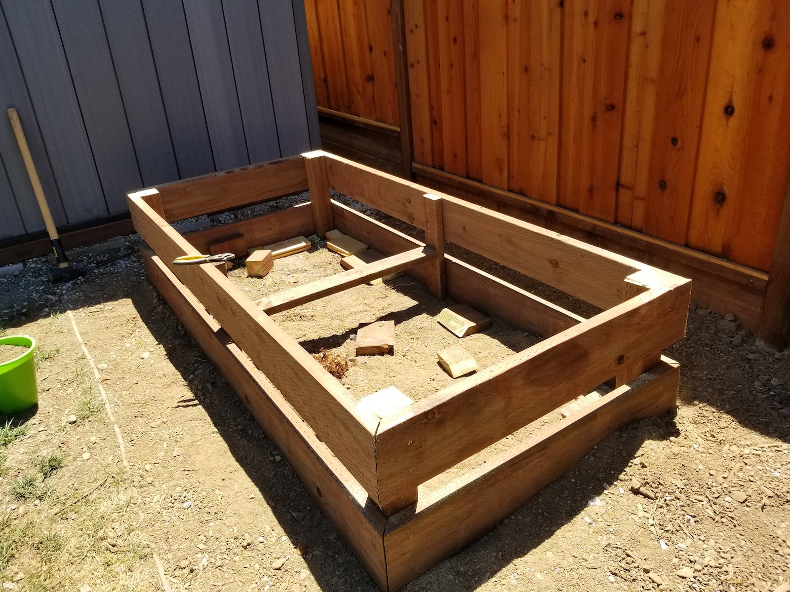
고생 고생해서 겨우 잘라냅니다. 이제 윗판을 만들어서 걸터 앉을 수 있게 할 생각입니다.
윗판은 옆면과 다르게 최대한 깔끔하게 맞추려고 하나씩 자르고 다시 각도를 재고 자르고 했는데, 그러는 사이에 다른 목재를 써버려서 사온 목재가 부족해졌네요. ㅜ.ㅜ
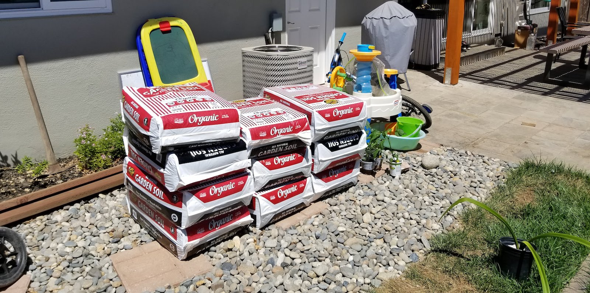
일단 사온 흙을 부어서 채우고 한쪽은 다음에 목재 사서 끼워넣어야 겠네요. 10포대를 샀는데 (30 cuft) 조금 부족하네요. 두 포대를 더 사서 채워넣어야 겠네요.
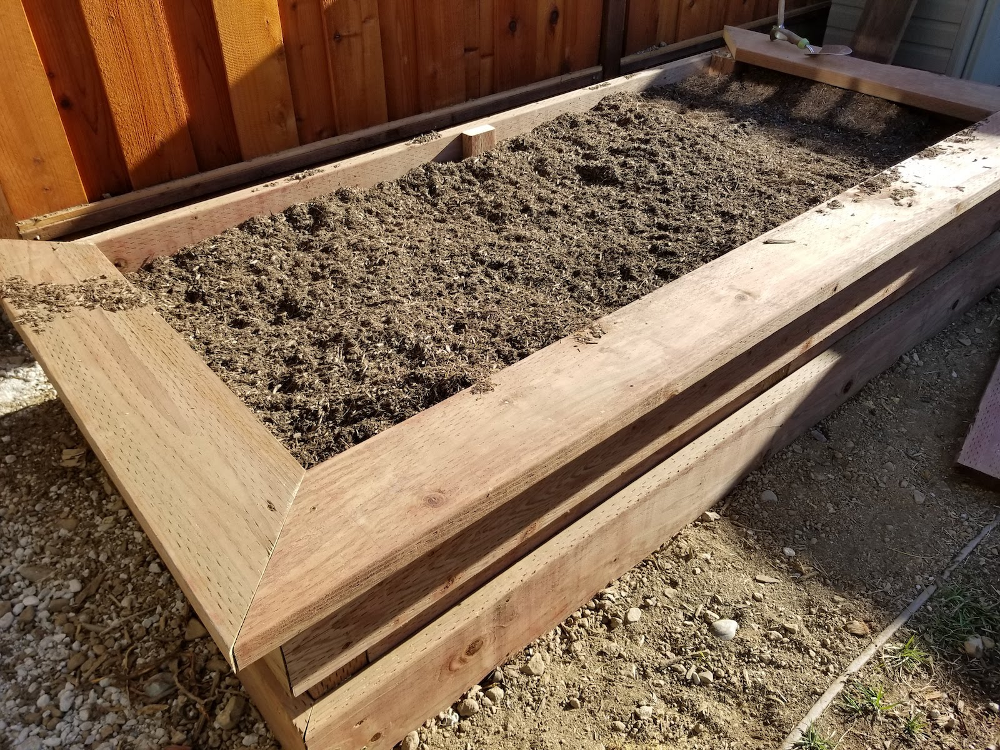
이렇게 대충 땜빵으로 텃밭이 만들어졌네요. 토마토와 고추를 심어뒀는데 흙을 좀 더 사와서 다른 한켠에 깨를 어서 심어야 겠습니다.
Drip Irrigation
텃밭을 만들고 매일 물을 주는게 좀 번거롭더군요. 아는 분께서는, 손으로 물을 주지 않으면 키우는게 아니라는 신념하게 꿋꿋하게 손으로 매일 직접 물을 주고 계시지만, 전 천성이 게으른 탓에 자동으로 물을 주는 방법을 모색하게 되었네요. 뒷마당에 수도꼭지가 하나 있는데, 그 수도꼭지에서 텃밭까지 타일로 되어있는 부분이 있어서, 땅속으로 새로 수도 라인을 따기도 어려운 상황이라 어떻게 해야 할지 잘 감이 안오더군요.
고민 끝에, 기존 잔디에 물을 주는 스프링클러 시스템 라인을 따서 이틀에 한번꼴로 물을 주기로 했습니다. 텃밭에서 가장 가까운 스프링클러 헤드에서부터 땅을 곡괭이로 파서 텃밭까지 홈을 팠어요.
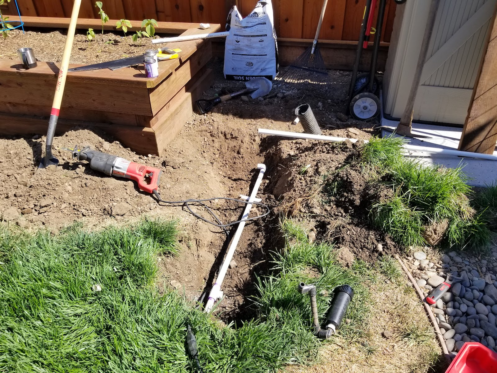
그리고 기존 스프링클러 헤드의 파이프를 잘라내고 tee를 연결해서 새 라인을 텃밭으로 땄네요. 땅파는건 힘들지만, PVC파이프를 연결하는 건 이제 식은 죽 먹기네요. 리시프로케이팅 쏘가 있으니 자르는게 정말 쉬워요. 예전엔 조그만 쇠톱으로 좁은 공간에서 스프링클러 밸브를 교체하느라 욕이 나올 지경이었는데, 역시 도구가 짱입니다.
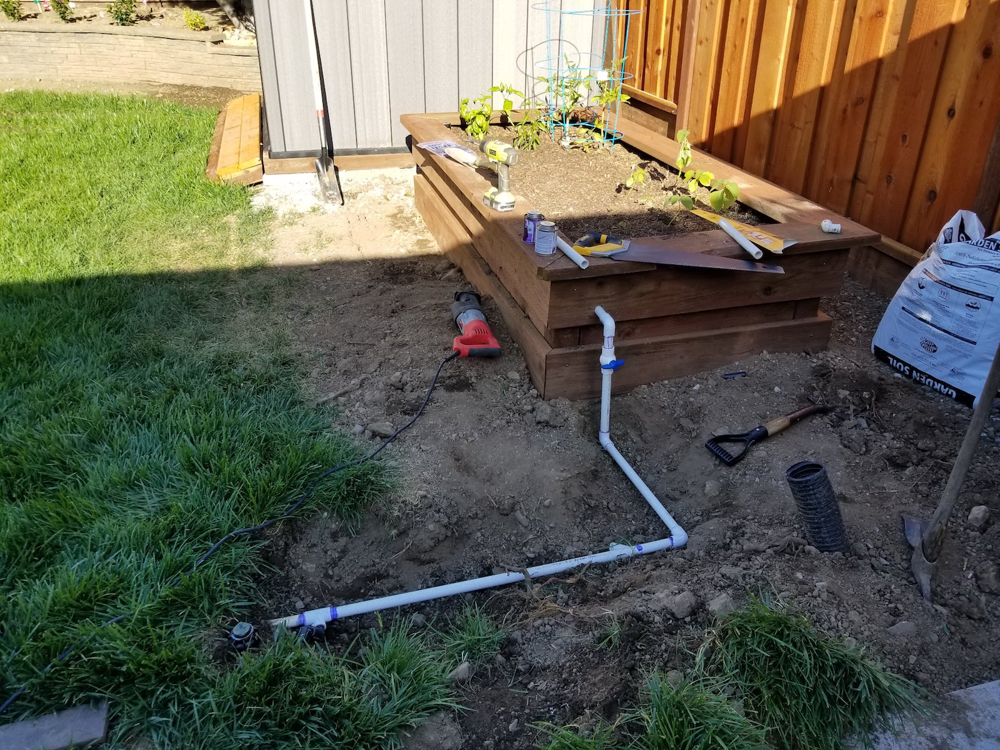
나무에 Hole Saw bit로 구멍을 뚫고 PVC 파이프를 넣어서 가든에 스프링클러를 설치했네요. 그런데 틀어보니 수압이 센 탓인지 다 번져서 울타리까지 튀더군요. 팝업 스프링클러를 쓰는 건 무리다 싶어서 계획을 변경해서 드립 시스템을 설치하기로 합니다.
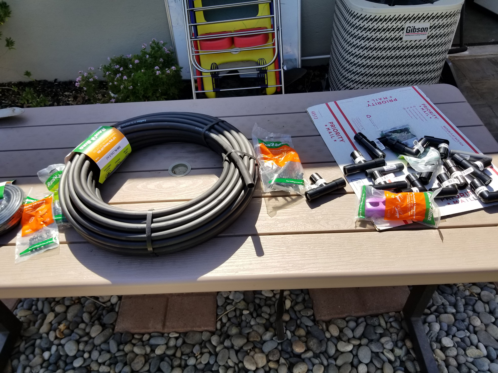
제 최애(?) 쇼핑몰이 되어버린 Home Depot에 가서 대충 머릿속에 그린 드립 라인대로 재료를 골라옵니다. 세 줄로 드립 라인을 뽑을거라 Tee 어댑터 4개 + 여분, 엘보 어댑터 2개, 3/4인치 파이프에서 1/2인치 튜브 연결 어댑터 2개, 엔드 캡 1개 드리퍼 여러팩 해서 사옵니다. 이제 길이에 맞춰서 튜브를 자르고 연결하기만 하면 되네요.
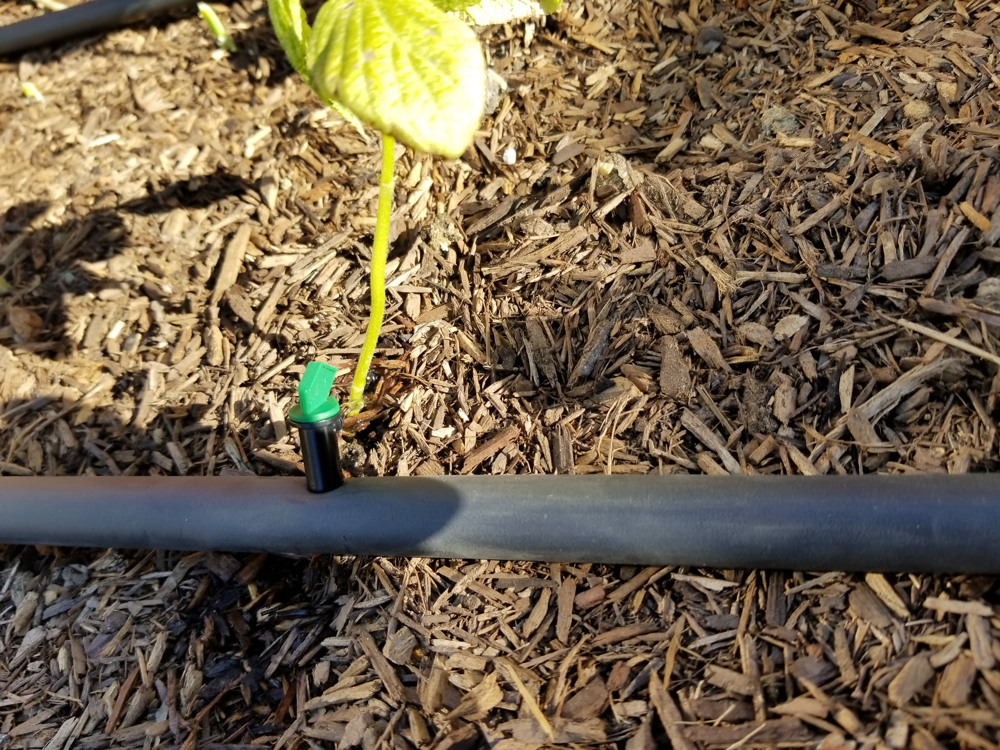
드리퍼는 나오는 물 양에 따라 조절이 가능한 데, 일단 채소에는 4GPH(Gallon/Hour) 짜리 드리퍼를 연결했네요. 이정도면 20분 정도 스프링클러가 동작하면 최소 1갤런은 부어질테니 충분할거라 판단이 들어서 연결해 두었는데, 아무래도 좀 많이 주는 듯 합니다. 좀 더 적게 나오는 녀석을 연결해도 됐을 것 같네요.
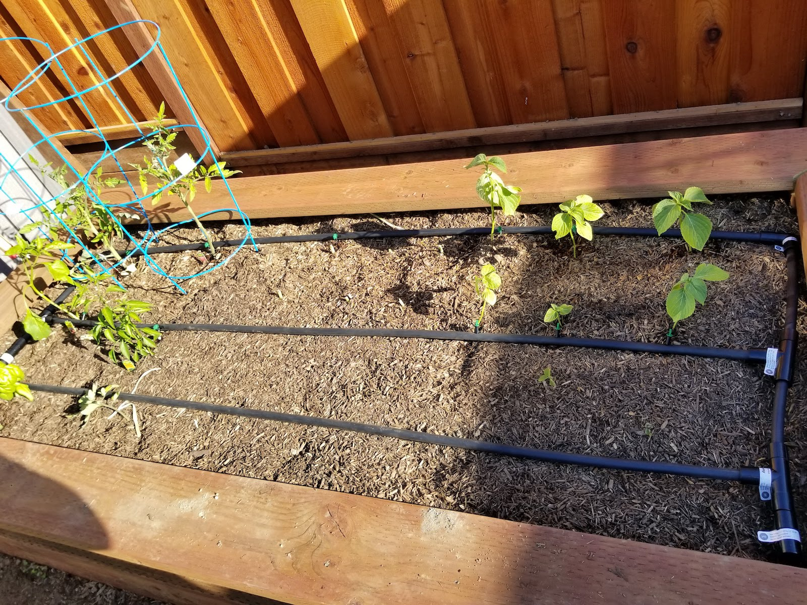
다 완성하고 나니 뿌듯하네요. 중간에 삽질도 있었죠. 가운데 드립 라인이 길어서 반듯하게 되지 않아 한쪽 Tee 어댑터를 잘라내고 다시 연결하러 홈디포에서 커플링을 사와야 했지요. 이런 시행착오는 항상 있더라구요. 아무리 궁리해서 재료를 사봤자, 처음 하는 일이라 오류가 있기 마련이고, 한번 작업할때 홈디포 두세번 방문은 흔한 일이 되더라구요. :)
이제 리테이닝 월 위에 드립 라인을 설치하면, 기존 파이프를 끊고 리테이닝 월 위쪽 라인과 연결해 볼 생각입니다. 안되면 말구요.. -_- 급 귀찮아지네요.